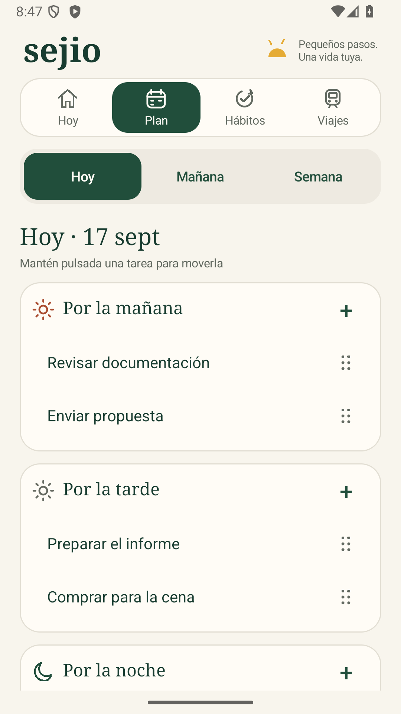
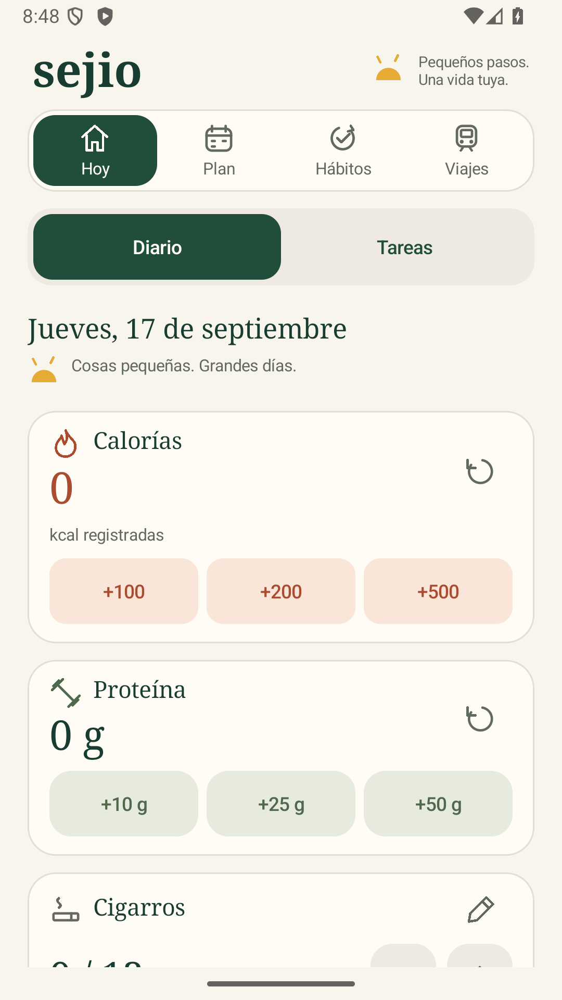
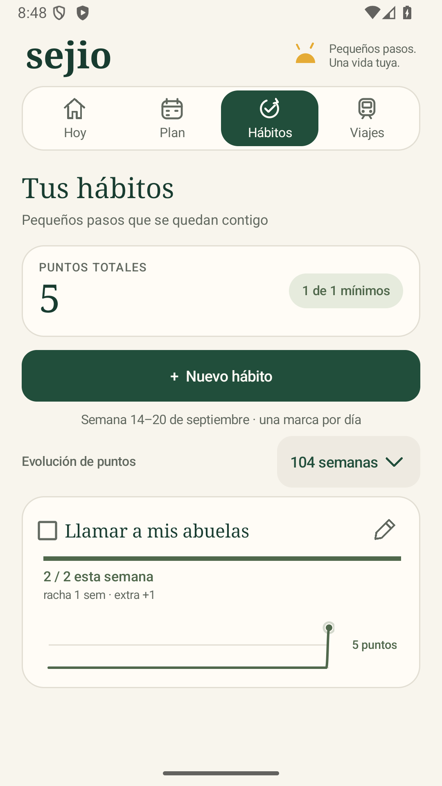
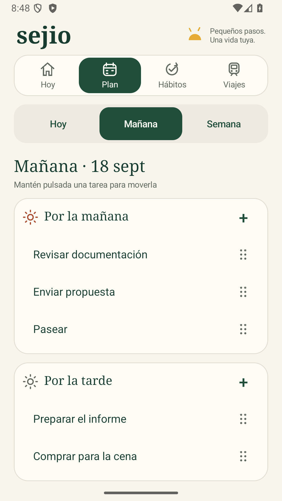
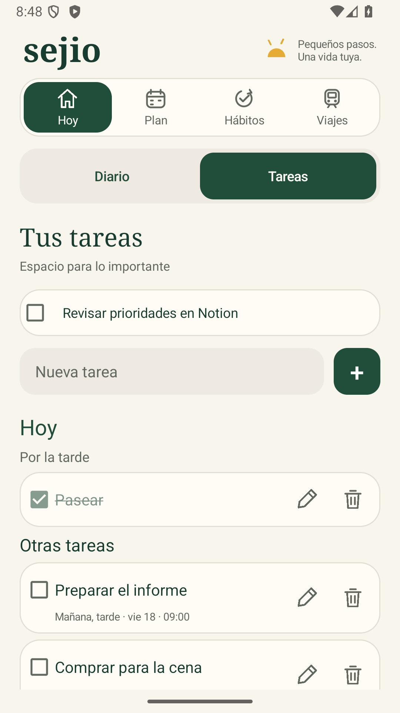
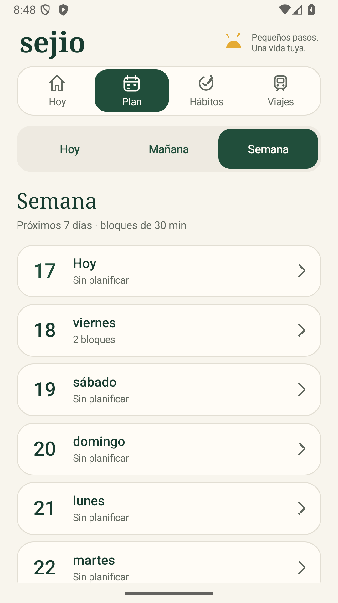
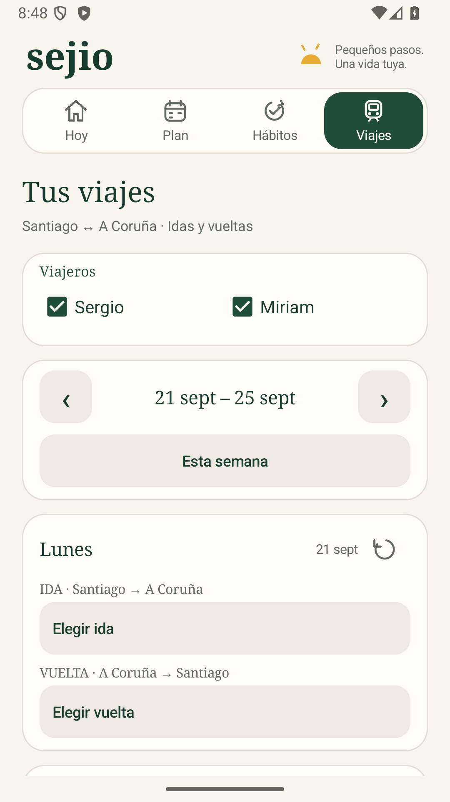

Tu plan de hoy
Las mismas franjas, edición y arrastre que Mañana. El plan preparado aparece aquí al cambiar de día.

Tu día
Contadores y acceso a las tareas de hoy.

Tus hábitos
Progreso, rachas, correcciones y gráficos.

Un plan para mañana
Mañana, tarde y noche; tareas que puedes mover.

Lo importante
Tu lista de tareas, dentro de Hoy.

La semana por delante
Agenda con bloques de media hora, dentro de Plan.

Idas y vueltas
Viajeros, horarios y revisión antes de formalizar.